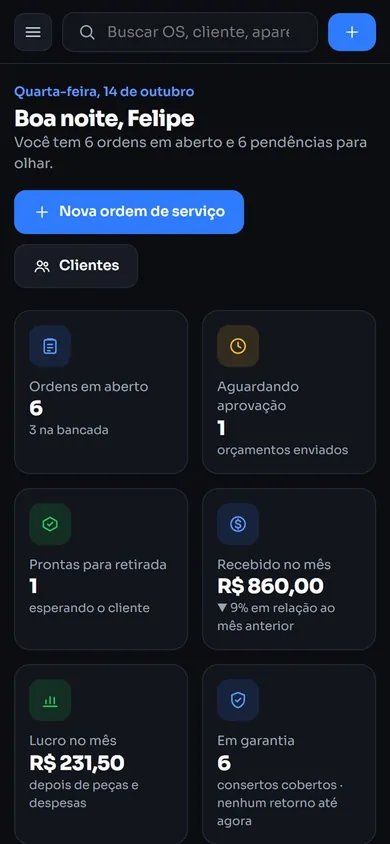
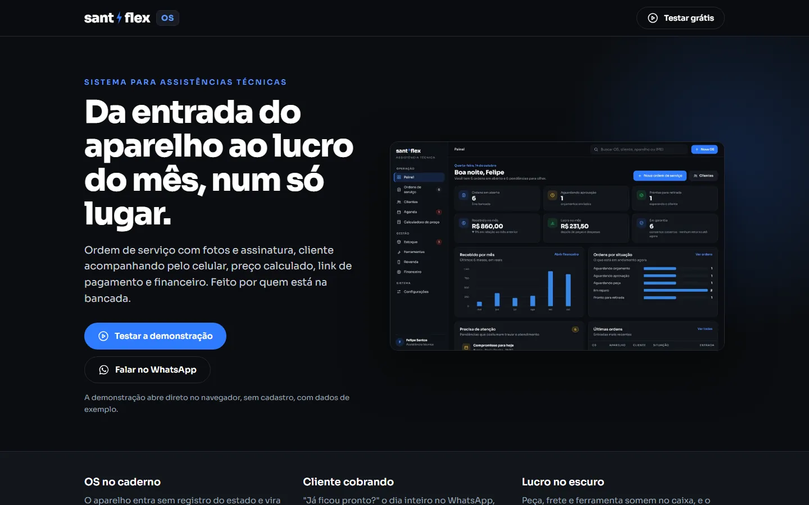
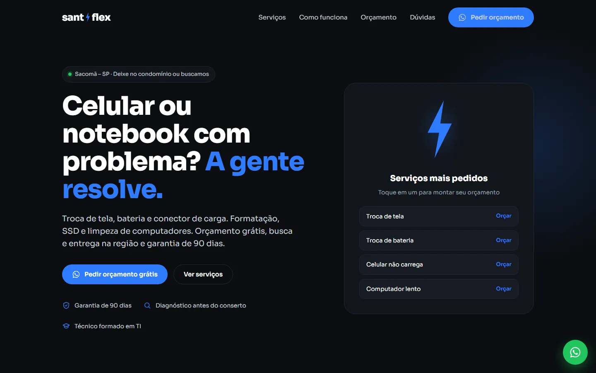
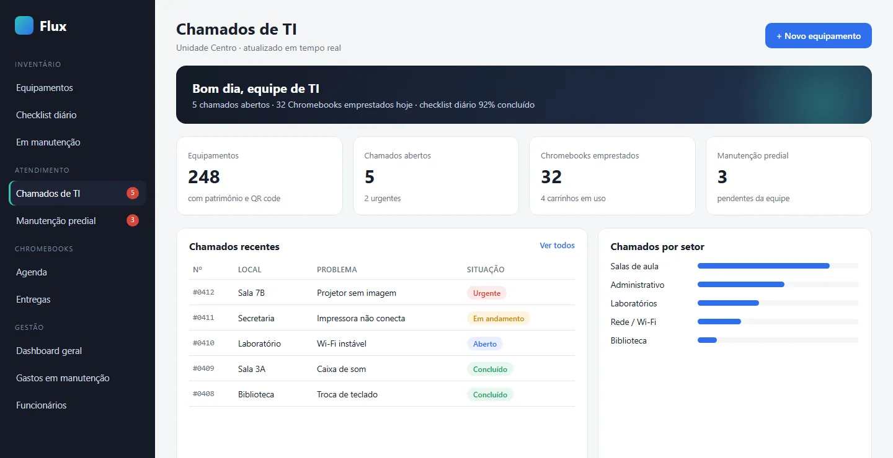
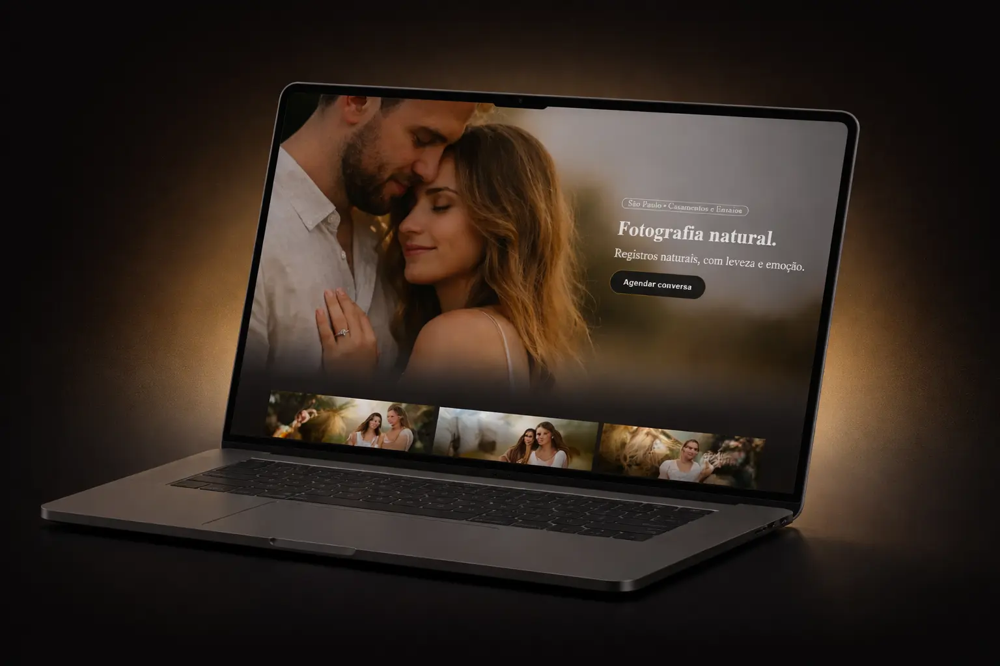

Landing pages
Páginas de venda e de apresentação com narrativa estratégica, feitas para converter visitas em contatos e testes do seu produto.
Sites • Landing pages • Sistemas web — São Paulo
Da landing page que gera contatos pelo WhatsApp ao sistema que organiza a rotina da sua empresa: projetos sob medida, rápidos, feitos para o celular e pensados para dar resultado.
Diagnóstico
Muita empresa boa perde clientes e tempo não por falta de qualidade, mas porque depende só do Instagram, de mensagens soltas e de controles no papel.
01
Sem um site claro, quem pesquisa no Google não descobre o que você faz, onde atende e por que confiar — e fecha com o concorrente.
02
O interessado chama no WhatsApp, mas faltam informações para ele decidir. Uma página bem estruturada responde antes e entrega o contato pronto para fechar.
03
Pedidos, chamados e valores espalhados geram retrabalho e prejuízo. Um sistema sob medida coloca tudo num só lugar, no computador e no celular.
Serviços
Cada projeto é desenvolvido do zero, com código próprio, foco em velocidade e no que realmente importa para o seu negócio.
Páginas de venda e de apresentação com narrativa estratégica, feitas para converter visitas em contatos e testes do seu produto.
Sites institucionais com SEO local, serviços bem explicados e orçamento direto pelo WhatsApp, para ser encontrado por quem está perto.
Painéis de gestão, ordens de serviço, chamados, estoque e financeiro — com login, dados na nuvem e atualização em tempo real.
Seu sistema com ícone na tela do celular, sem passar pela loja de aplicativos, integrado a WhatsApp, QR code e links de pagamento.
Portfólio
Sistemas que organizam a operação e páginas que geram clientes. Clique para ver cada projeto funcionando.

Sistema web · Produto próprio
Sistema de ordens de serviço criado a partir da rotina real de bancada: o aparelho entra com fotos, testes e assinatura do cliente, o orçamento sai calculado e o cliente acompanha o conserto pelo celular — sem precisar perguntar.

Landing page · Lançamento de produto
Landing page para divulgar o sistema a outros técnicos: começa pelas dores da bancada, mostra cada recurso com prints reais, apresenta os planos e leva o visitante direto para a demonstração ou para o WhatsApp.

Site institucional · Negócio local
Site da assistência de celulares e computadores no Sacomã (SP), pensado para quem chega pelo Google com o aparelho quebrado: serviços claros, garantia em destaque e um montador de mensagem que entrega o pedido de orçamento pronto.

Sistema interno com acesso restrito. Imagem ilustrativa, com dados fictícios.
Sistema web · Educação
Sistema em uso diário numa escola particular com duas unidades. Trocou planilhas e mensagens soltas por um só lugar para inventário, chamados e empréstimo de Chromebooks: professores abrem chamados pelo celular em segundos e a equipe acompanha tudo em tempo real.

Landing page · Fotografia
Landing page desenvolvida para fortalecer o posicionamento, organizar o portfólio com narrativa estratégica e conduzir o visitante até o agendamento de forma natural.
01
Entendemos seu público, sua rotina e onde você perde clientes ou tempo. Antes do layout, existe direção.
02
Organizamos conteúdo e telas de forma clara, conduzindo o visitante — ou a sua equipe — até a ação certa.
03
Visual que transmite confiança e código próprio, rápido e responsivo, testado no computador e no celular.
04
Colocamos no ar com domínio, SEO e prévia para WhatsApp — e seguimos ajustando a partir do uso real.
Metodologia
Antes de qualquer decisão visual, existe estratégia. Cada projeto é estruturado para resolver um problema real do seu negócio — muito além de simplesmente "ter um site bonito".
Diferencial
Os sistemas do portfólio nasceram de problemas reais e são usados todos os dias. É essa experiência de quem está na operação que vai para cada projeto.
Começamos pelo seu público e pelo seu processo. Cada tela tem um objetivo: gerar contato, agilizar a rotina ou mostrar resultado.
Seu cliente e sua equipe usam o celular. Tudo é pensado primeiro para a tela pequena, leve e rápido mesmo no 4G.
Nada de construtor de sites engessado. Você recebe um projeto sob medida, hospedado com custo baixo ou zero.
Quem está por trás
Desenvolvedor web e técnico em TI, à frente da DarkFrame Studio. Trabalho na prática com suporte, manutenção e atendimento — e é daí que saem os meus sistemas: o Flux.TI nasceu da rotina de TI de uma escola, e o SantFlex OS da minha própria bancada de assistência técnica.
Por isso cada projeto é pensado para quem vai usar de verdade: simples de operar, rápido no celular e focado em trazer clientes ou economizar tempo.
Próximo passo
Se você quer ser encontrado, receber contatos qualificados ou tirar a rotina do caderno e da planilha, vamos conversar sobre o seu projeto.
Conversa direta. Sem compromisso. Resposta em até 24 horas.